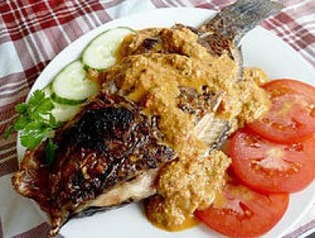

Sebelum membahas natinombur lebih jauh, ada baiknya dipahami dulu apa makna kata natinombur. Kata dasar natinombur adalah tombur. Sejumlah sumber menyebut, arti harafiah tombur adalah basah atau berair. Bentuk kata kerja dari tombur adalah manombur, artinya membasahi atau mengairi.
Dengan demikian, natinombur secara harafiah berarti makanan yang dibasahi atau dikuahi. Berdasarkan etimologi ini, sejumlah artikel atau panduan-panduan resep natinombur yang bertebaran di internet bisa diperdebatkan ulang, sebab kebanyakan menyebut natinombur adalah ikan bakar yang disajikan dengan sambal, atau ikan panggang yang dilumuri sambal.
Menurut cerita, natinombur ini adalah makanan para nelayan di Danau Toba yang pergi ke danau mencari ikan dengan solu (sampan). Dari rumah bumbu-bumbu telah disiapkan. Ketika istirahat di tepi pantai, si nelayan tinggal membakar ikan, lalu menyiramkan bumbu itu ke dalam ikan atau sebaliknya, memasukkan ikan itu ke kuah bumbu. Tradisi itu terus awet hingga zaman modern dan terlestari karena citarasanya memang menggiurkan.
Secara ringkas, proses pembuatan natinombur adalah seperti ini: siapkan ikan mujahir (belakangan ikan lele dan ikan nila juga menjadi lazim). Ikan itu dibersihkan sebagaimana laiknya, lalu dilumuri air jeruk nipis dan sedikit garam. Ini bertujuan untuk menghilangkan bau amis ikan. Setelah dibiarkan beberapa lama hingga air jeruk nipis meresap, ikan lalu dipanggang hingga matang. Di sisi lain, berlangsung juga pembuatan resep bumbu. Bumbu terdiri dari bawang merah, kemiri, jahe (dibakar), lalu cabai rawit, andaliman jeruk nipis, tentu garam secukupnya. Semua bumbu-bumbu itu ditumbuk halus hingga menyerupai sambal. Sambal itu kemudian dibasahi dengan air panas. Ikan bakar kemudian dilumatkan (atau dipenyetkan, seperti membuat ayam penyet), lalu dimasukkan ke dalam kuah bumbu tadi.
semoga bermanfaat
Indonesia , Tobasamosir , Jl.P.I.Del,Sitoluama,Lagu Boti.